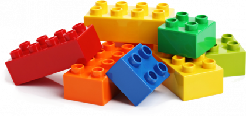
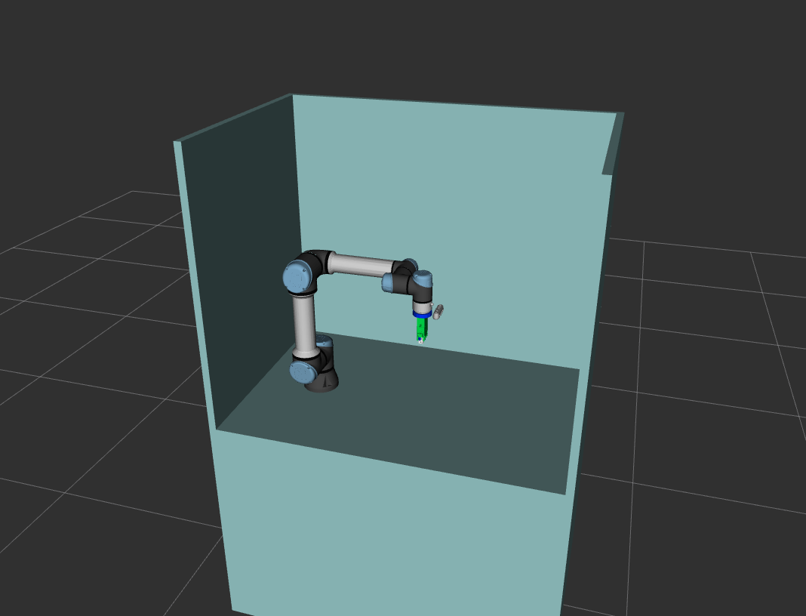

layout: true <div class="header"><img src="https://images.squarespace-cdn.com/content/v1/51df34b1e4b08840dcfd2841/1606823817404-Z5YILRLYBT2VHCN6JVCB/RIC+Europe+Logo+TM.png" style="background-color:transparent"/></div> <div class="footer"><img src="https://www.ipa.fraunhofer.de/content/dam/ipa/ipa.svg" /><p>© Fraunhofer IPA</p></div> <div class="triangle"></div> --- <!-- page 1 --> # Creating ur5e_cell_description package ## Composing the xacro components to create the robot cell <div> <center>  </center> </div> --- <!-- page 2 --> ## Creating the ur5e_cell_description package .image-right[] - The setup for today's demonstration has 4 static components described in URDF *(XACRO)*: - **Robot Cell** The cell around the robot - **Robot** The robotic arm in our case a UR5e - **Endeffector** The endeffector in our case a robot gripper of type Schunk EGP50 - **Camera** The camera that is mounted on the robot arm of type Realsense D435 --- <!-- page 4 --> ## Creating the ur5e_cell_description package The best practice is to structure a description package as follows: .image-right[ ``` ur5e_cell_description ├── config ├── launch ├── meshes ├── rviz ├── urdf ├── CMakeLists.txt └── package.xml ``` ] * **config/**: Configuration files for the robot description * **launch/**: Launch files for viewing the robot description * **meshes/**: Meshes used in the robot description * **rviz/**: Rviz configuration files * **urdf/**: URDF and XACRO files for the robot cell --- ## Creating the ur5e_cell_description package ### How to get the component's description files? - **Robot Cell** Created by us using simple primitives - **Robot** Imported automatically from the ur_description package - **Endeffector** Created by us based on STL files - **Camera** Imported automatically from the realsense2_description package --- ## Creating the ur5e_cell_description package ### How to combine the different components? 1. Create a worcell.urdf.xacro 2. Include the components the components 3. Get all necessary arguments for the components 4. Instantiate the components 5. Create the joints between the components and the world frame --- <!-- page 12 --> <div class="centered"> <h2> <center> End of Presentation </center> </h2> <h1> <center> Questions </center> </h1> </div>